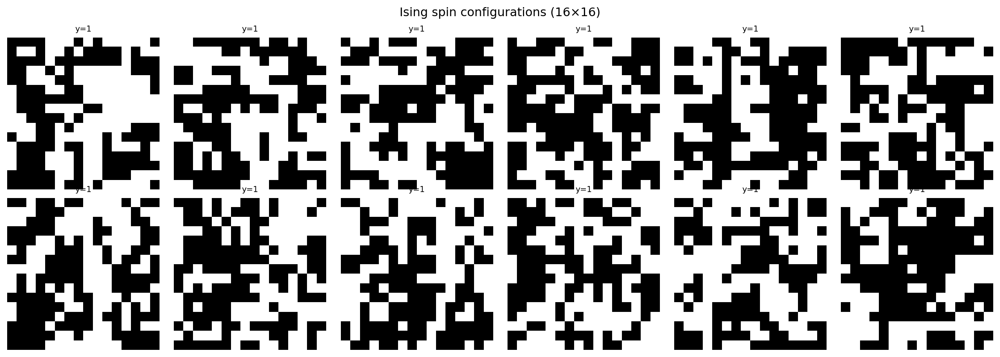
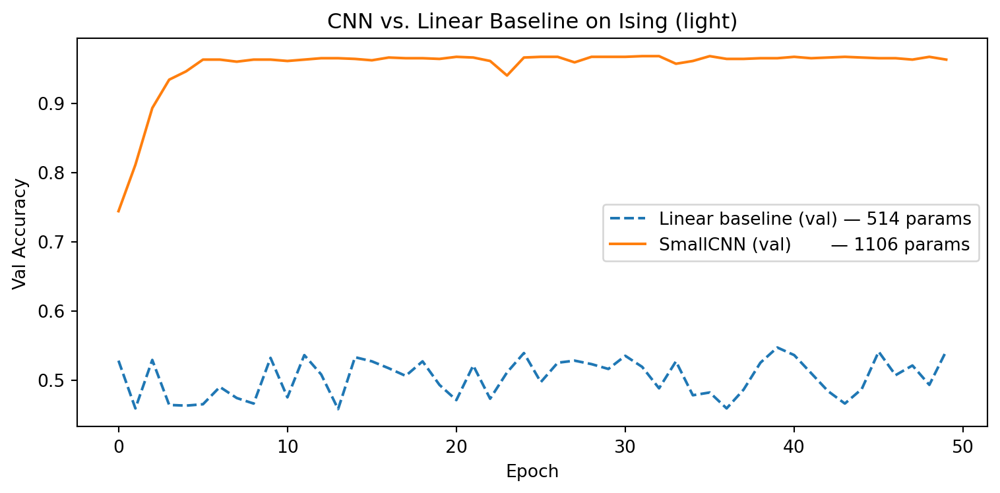
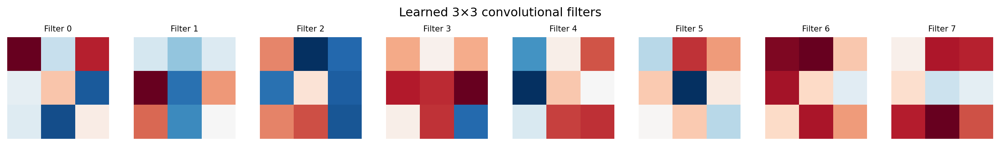

!pip install git+https://github.com/ECLIPSE-Lab/Ai4MatLectures.git "mdsdata>=0.1.5"MLPC Week 5: Convolutional Neural Network (Light)
Spatial feature maps with IsingDataset (16×16)

Learning Objectives
- Understand
nn.Conv2dand how it extracts spatial features - Trace feature map dimensions through conv and pooling layers
- Compare CNN accuracy to a linear (flattened) baseline
Setup
import torch
import torch.nn as nn
from torch.utils.data import DataLoader, random_split
from ai4mat.datasets import IsingDataset
import matplotlib.pyplot as plt
import numpy as np1. Load the Data
dataset = IsingDataset(size='light')
print(f"Dataset size: {len(dataset)}")
x0, y0 = dataset[0]
print(f"Sample x shape: {x0.shape} (C=1, H=16, W=16)")
print(f"Sample y: {y0} (0=disordered, 1=ordered)")Dataset size: 5000
Sample x shape: torch.Size([1, 16, 16]) (C=1, H=16, W=16)
Sample y: 1 (0=disordered, 1=ordered)fig, axes = plt.subplots(2, 6, figsize=(14, 5))
for i, ax in enumerate(axes.flat):
ax.imshow(dataset[i][0].squeeze().numpy(), cmap='gray', vmin=0, vmax=1)
ax.set_title(f"y={dataset[i][1].item()}", fontsize=8)
ax.axis('off')
plt.suptitle("Ising spin configurations (16×16)")
plt.tight_layout()
plt.show()
2. Train/Val Split
n_train = int(0.8 * len(dataset))
n_val = len(dataset) - n_train
train_ds, val_ds = random_split(dataset, [n_train, n_val])
train_loader = DataLoader(train_ds, batch_size=64, shuffle=True)
val_loader = DataLoader(val_ds, batch_size=64, shuffle=False)
print(f"Train: {n_train} | Val: {n_val}")Train: 4000 | Val: 10003. Define Models
Linear Baseline
linear_model = nn.Sequential(
nn.Flatten(),
nn.Linear(256, 2)
)
n_linear = sum(p.numel() for p in linear_model.parameters())
print(f"Linear model parameters: {n_linear:,}")Linear model parameters: 514SmallCNN
class SmallCNN(nn.Module):
def __init__(self):
super().__init__()
self.conv = nn.Sequential(
nn.Conv2d(1, 8, kernel_size=3, padding=1), # output: (8, 16, 16)
nn.ReLU(),
nn.MaxPool2d(2), # output: (8, 8, 8)
)
self.fc = nn.Sequential(
nn.Flatten(),
nn.Linear(8 * 8 * 8, 2)
)
def forward(self, x):
return self.fc(self.conv(x))
cnn_model = SmallCNN()
n_cnn = sum(p.numel() for p in cnn_model.parameters())
print(f"SmallCNN parameters: {n_cnn:,}")
# Trace dimensions
x_test = torch.randn(1, 1, 16, 16)
feat = cnn_model.conv(x_test)
print(f"\nFeature map after conv+pool: {feat.shape} (B, C, H, W)")SmallCNN parameters: 1,106
Feature map after conv+pool: torch.Size([1, 8, 8, 8]) (B, C, H, W)4. Training Loop
def train_and_eval(model, train_loader, val_loader, n_train, n_val, epochs=50, lr=1e-3):
criterion = nn.CrossEntropyLoss()
optimizer = torch.optim.Adam(model.parameters(), lr=lr)
train_accs, val_accs = [], []
for epoch in range(epochs):
model.train()
ep_acc = 0.0
for x_batch, y_batch in train_loader:
optimizer.zero_grad()
logits = model(x_batch)
loss = criterion(logits, y_batch)
loss.backward()
optimizer.step()
ep_acc += (logits.argmax(1) == y_batch).float().sum().item()
train_accs.append(ep_acc / n_train)
model.eval()
v_acc = 0.0
with torch.no_grad():
for x_batch, y_batch in val_loader:
logits = model(x_batch)
v_acc += (logits.argmax(1) == y_batch).float().sum().item()
val_accs.append(v_acc / n_val)
return train_accs, val_accs
torch.manual_seed(0)
lin_train, lin_val = train_and_eval(linear_model, train_loader, val_loader, n_train, n_val)
torch.manual_seed(0)
cnn_train, cnn_val = train_and_eval(cnn_model, train_loader, val_loader, n_train, n_val)
print(f"Linear model — final val accuracy: {lin_val[-1]:.3f}")
print(f"SmallCNN — final val accuracy: {cnn_val[-1]:.3f}")Linear model — final val accuracy: 0.542
SmallCNN — final val accuracy: 0.9635. Evaluation
plt.figure(figsize=(8, 4))
plt.plot(lin_val, '--', label=f'Linear baseline (val) — {n_linear} params')
plt.plot(cnn_val, '-', label=f'SmallCNN (val) — {n_cnn} params')
plt.xlabel("Epoch"); plt.ylabel("Val Accuracy")
plt.title("CNN vs. Linear Baseline on Ising (light)")
plt.legend(); plt.tight_layout(); plt.show()
# Visualize the 8 learned conv filters
filters = cnn_model.conv[0].weight.data.squeeze(1).numpy() # (8, 3, 3)
fig, axes = plt.subplots(1, 8, figsize=(14, 2))
for i, ax in enumerate(axes):
vmax = np.abs(filters[i]).max()
ax.imshow(filters[i], cmap='RdBu_r', vmin=-vmax, vmax=vmax)
ax.set_title(f"Filter {i}", fontsize=8)
ax.axis('off')
plt.suptitle("Learned 3×3 convolutional filters")
plt.tight_layout()
plt.show()
Exercises
- Remove
nn.MaxPool2d(2)from theSmallCNN. What happens to the number of parameters and the feature map size entering the FC layer? - Try
kernel_size=5withpadding=2. How does the feature map size change after conv? Does accuracy improve? - Apply the trained conv filters manually:
feat = cnn_model.conv(dataset[0][0].unsqueeze(0)). Plot the 8 feature maps. What spatial structures does each filter detect?